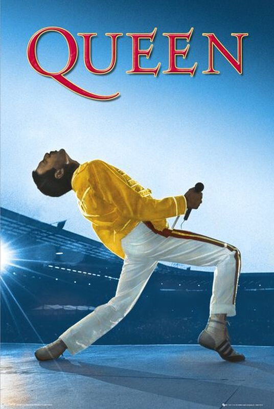
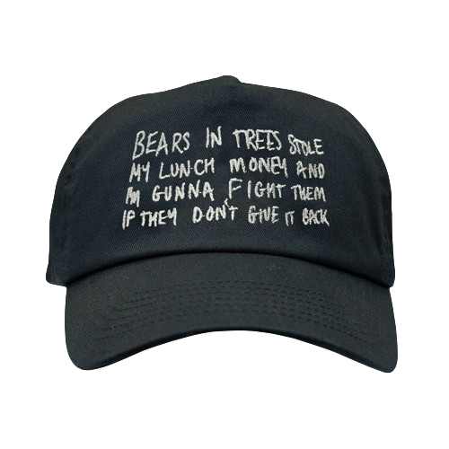
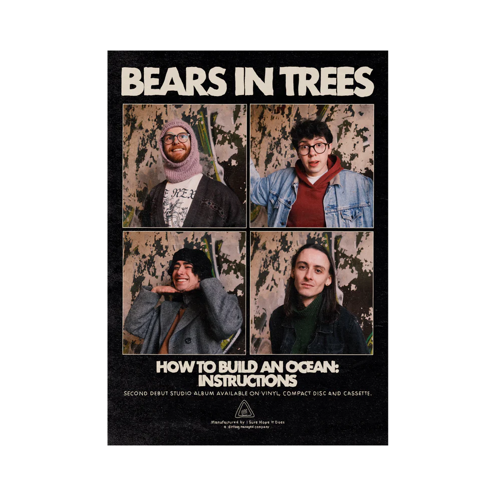
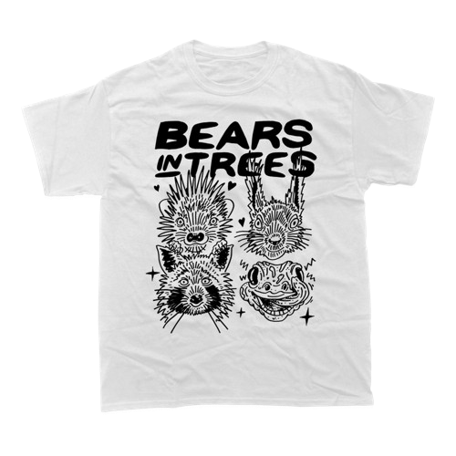
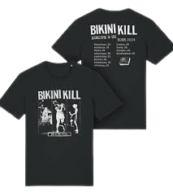
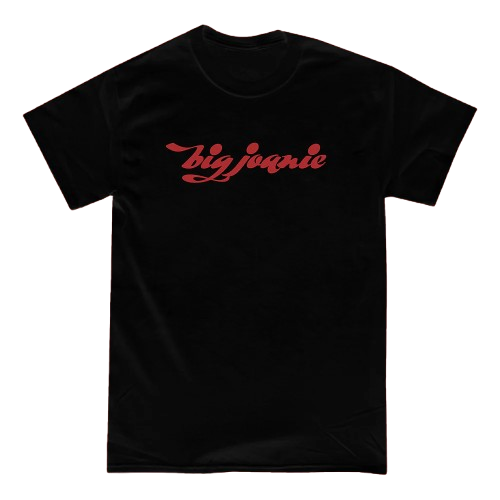

|  | i bought this when i was twelve and it still hangs proudly in my room! my old school used to hold a poster fair and i found this. when i came home i cried, i was so happy :) |
|  | i HATE caps of which the front are like hard? so i never wear them and then my mom gets angry that i don't wear them lmao. they sold this at the concert i went to and i saw the front was soft and immediately bought it :D
it reads: "bears in trees stole my lunch money and i'm gunna fight them if they don't give it back" |
|  | also bought this at the concert :) i put it up beside my bed! |
|  | ALSO bought this at the concert. i spent so much holy shit but i'm glad i did - callum, iain and george were walking around during & after the happy fits show and i got to ask them to sign it! |
 | (-> this is not my poster, i havent been able to take a proper picture lmao this is just so you get an idea) limited edition johannes is zijn naam poster :P i got the fifth one! bought this at his show and he signed it with "oliver is zijn naam" (translation: oliver is his name) !!! super cool |
 | probably doesn't count as merch but i found this book in germany and was so relieved it was in english and not too expensive lmao. the pictures are beautiful! |
|  | me and my friend bought this before the show bc we were scared it'd be sold out afterwards!!! really happy with it :> |
|  | we (me and the friend i went to see the show with) weren't planning to buy a lot of merch bc we didn't know big joanie that well, but they gave us the setlist (as in estella adeyeri, the bassist, literally came to us after their part of the show and handed it to us like HOLY SHIT) and then we were so hyped and the show was soooo good that we wanted to support them!!!! they stood at the merch stand and they recognised us mlsqdfjq and they were so so so nice!!! |
 | there were four patches, each picturing a family member of the group! i don't remember who's family member i have, but it looks very cool!!! i've sewed it on my vest :) |